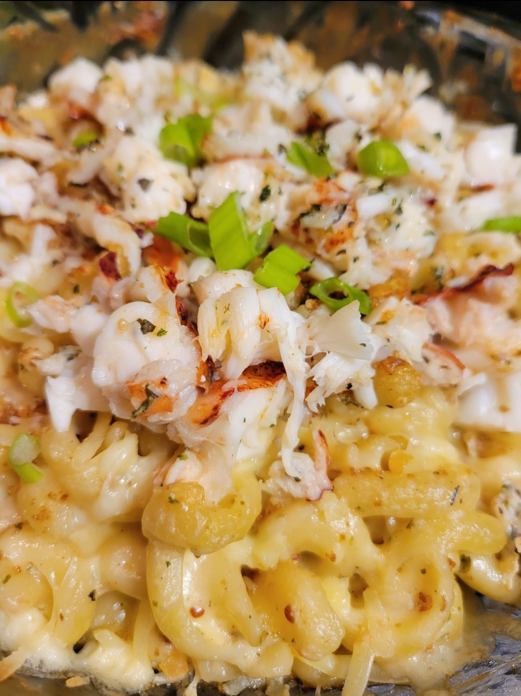

When I'm not coding and developing, you can find me doing some of my favorite things.
Cooking

Cooking not only feeds my tastebuds, it feeds my creativity and my soul. I admire food that pleases all of your senses.
My skills in the kitchen started by transforming rice-a-roni with canned chicken breast and frozen broccoli. Sometimes the rice was still crunchy but that's how I started.
I wanted to get better. I wanted my food to taste as delicious as my parents' so I started paying more attention when they cooked. Oh yes, both of my parents can cook really well.
Traveling definitely gave me a solid background in cooking from many other cultures. Some of my favorite things to make and have are enchiladas, lumpia, lasagna, etouffee, and stroganoff.
Traveling

I feel like I don't do it enough but I love to travel and I currntly do it as often as I can. If you ever get a chance to meet me you may understand that old adage, there are no strangers, only friends. I love meeting new people and learning about their cultures.
Where did my love for travel come from? I had taken several flights and lived in 4 states before I was 5 years old and I was sad when my Dad retired from the military, our great adventures stopped and grade school began.
I have been to Louisiana, Hawaii, Florida, California, Alabama, New Mexico, Nevada and Mexico. The United States has so much more for me to explore, and still I yearn for a stamp on my passport.
Volunteering

Volunteering is the way that I choose to serve my community. It's a way to show how grateful I am for the things I have been through to where I am now.
I have great parents who lead by example, volunteering their time weekly. I think it's always the most fun when we volunteer together. I have cooked for victims of Hurricane Katrina with my Dad and watched their children with my Mom.
If you're thinking of volunteering, there's all sorts of things you can do to get started. I volunteered with a few of my co-workers at the food bank. I recorded an audiobook for the Goodard School for the Blind, and I have recently signed up to join the Big Brother's Big Sister's Program.